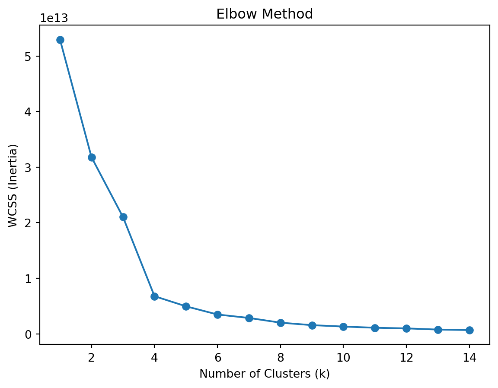
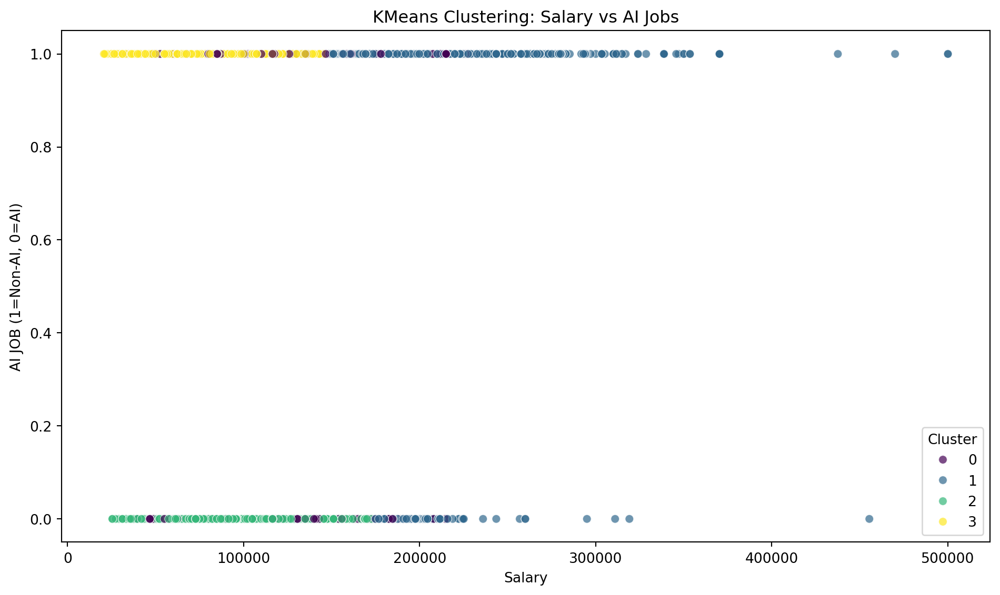

from pyspark.sql import SparkSession# Start a Spark sessionspark = SparkSession.builder.appName("JobPostingsAnalysis").getOrCreate()# Load the CSV file into a Spark DataFramedf = spark.read.option("header", "true").option("inferSchema", "true").option("multiLine","true").option("escape", "\"").csv("../data/lightcast_job_postings.csv")
WARNING: Using incubator modules: jdk.incubator.vector
Using Spark's default log4j profile: org/apache/spark/log4j2-defaults.properties
Setting default log level to "WARN".
To adjust logging level use sc.setLogLevel(newLevel). For SparkR, use setLogLevel(newLevel).
25/10/16 02:22:31 WARN NativeCodeLoader: Unable to load native-hadoop library for your platform... using builtin-java classes where applicable
[Stage 1:> (0 + 1) / 1]
[Stage 2:> (0 + 1) / 1] 25/10/16 02:22:51 WARN SparkStringUtils: Truncated the string representation of a plan since it was too large. This behavior can be adjusted by setting 'spark.sql.debug.maxToStringFields'.
[Stage 3:> (0 + 1) / 1]
# Cleaning empty rows and dropping columns that are mostly emptyfill_cols = ["CITY_NAME", "CITY", "LOCATION", "STATE", "STATE_NAME", "COMPANY", "COMPANY_NAME"]clean_pdf[fill_cols] = clean_pdf[fill_cols].fillna("Unknown")clean_pdf = clean_pdf.drop_duplicates(subset=["TITLE", "COMPANY", "LOCATION", "POSTED"], keep="first")clean_pdf.dropna(thresh=len(clean_pdf)*0.5, axis=1, inplace=True)#New Column to Classify AI Jobs and Add Month of Posting Dateai_keywords = ["AI", "Machine Learning", "Data Scientist", "Data Analyst", "ML", "Artificial Intelligence", "Deep Learning", "NLP", "Predictive Analytics"]#Function to classify AI vs Non-AI Jobsdef classify_ai(title): title_lower =str(title).lower()for keyword in ai_keywords:if keyword.lower() in title_lower:return"AI"return"Non-AI"clean_pdf["AI_JOB"] = clean_pdf["TITLE_RAW"].apply(classify_ai)clean_pdf["POSTED"] = pd.to_datetime(clean_pdf["POSTED"], errors="coerce")clean_pdf["POSTED_MONTH"] = clean_pdf["POSTED"].dt.month#Add column for URBAN vs RURALclean_pdf["URBAN_RURAL"] = clean_pdf["MSA_NAME"].apply(lambda x: "Urban"if pd.notnull(x) else"Rural")
2 Model 1: KMeans Clustering
We applied KMeans clustering to identify patterns in the data. We wanted to each cluster to represent a group of jobs based on characteristics of Salary, AI jobs, remote work, and Urban or Rural locations. We used an elbow method to find the ideal number of clusters, which was 4, though the model didn’t reflect as concise groupings as wanted.
Features:
SALARY: Continuous numerical feature to reflect compensation. AI_JOB: Binary feature (AI vs Non-AI), one-hot encoded. REMOTE_TYPE_NAME: One-hot encoded categories (On-site, Remote, Hybrid). URBAN_RURAL: One-hot encoded (Urban or Rural).
Implications for Job Seekers
A job seeker can use this model to see what type of characteristics of a job might be tied to others. For example, AI jobs might yield high salaries, and if we used a reference of industry might be able to find an industry of interest that falls in a cluster that is being regarded in the job hunt. This can also be tied into the Skills Gap Analysis to see what a job seeker should work on in order to be considered for a certain cluster.
#KMeans clustering using NAICS as a reference but not a targetfrom sklearn.preprocessing import StandardScaler# Select featuresfeatures = clean_pdf[["SALARY", "AI_JOB", "REMOTE_TYPE_NAME", "URBAN_RURAL"]]# One-hot encode categorical columnsfeatures_encoded = pd.get_dummies(features, columns=["AI_JOB", "REMOTE_TYPE_NAME", "URBAN_RURAL"], drop_first=True)# Standardize numerical features (important for KMeans)scaler = StandardScaler()features_scaled = scaler.fit_transform(features_encoded)from sklearn.cluster import KMeansk =4kmeans = KMeans(n_clusters=k, random_state=42)clean_pdf["CLUSTER"] = kmeans.fit_predict(features_scaled)#Use Industry Name (NAICS2022) as a reference labelcluster_summary = ( clean_pdf.groupby(["CLUSTER", "NAICS_2022_2_NAME"]) .size() .reset_index(name="count") .sort_values(["CLUSTER", "count"], ascending=[True, False]))print(cluster_summary)#Used an Elbow Method to choose the correct number of clustersfrom sklearn.cluster import KMeansimport matplotlib.pyplot as plt# Example featuresX = features_encoded.values # your numerical featureswcss = []for k inrange(1, 15): km = KMeans(n_clusters=k, random_state=42) km.fit(X) wcss.append(km.inertia_)plt.plot(range(1, 15), wcss, marker='o')plt.xlabel('Number of Clusters (k)')plt.ylabel('WCSS (Inertia)')plt.title('Elbow Method')plt.show()cluster_summary.head(20) # Show top 20 to see patternsone_hot_cols = ['AI_JOB_Non-AI', 'REMOTE_TYPE_NAME_On-site', 'REMOTE_TYPE_NAME_Remote', 'URBAN_RURAL_Urban']clean_pdf = pd.concat([clean_pdf, features_encoded[one_hot_cols]], axis=1)import seaborn as snsimport matplotlib.pyplot as pltplt.figure(figsize=(10,6))sns.scatterplot( data=clean_pdf, x='SALARY', y='AI_JOB_Non-AI', hue='CLUSTER', palette='viridis', alpha=0.7)plt.title("KMeans Clustering: Salary vs AI Jobs")plt.xlabel("Salary")plt.ylabel("AI JOB (1=Non-AI, 0=AI)")plt.legend(title="Cluster")plt.tight_layout()plt.show()
CLUSTER NAICS_2022_2_NAME count
13 0 Professional, Scientific, and Technical Services 2968
6 0 Finance and Insurance 1720
1 0 Administrative and Support and Waste Managemen... 1598
10 0 Manufacturing 734
8 0 Information 696
.. ... ... ...
60 3 Accommodation and Food Services 353
69 3 Management of Companies and Enterprises 146
71 3 Mining, Quarrying, and Oil and Gas Extraction 95
63 3 Arts, Entertainment, and Recreation 71
62 3 Agriculture, Forestry, Fishing and Hunting 45
[80 rows x 3 columns]


#Visualizing the NAICS Industries in reference to each clusterimport matplotlib.pyplot as plttop_industries = ( clean_pdf.groupby(["CLUSTER", "NAICS_2022_6_NAME"]) .size() .reset_index(name="count"))top3 = top_industries.groupby("CLUSTER").apply(lambda x: x.nlargest(3, "count")).reset_index(drop=True)pivot_df = top3.pivot(index="CLUSTER", columns="NAICS_2022_6_NAME", values="count").fillna(0)print(pivot_df)pivot_df.plot(kind='bar', stacked=True, figsize=(10,6), colormap='tab20') plt.title("Top 3 Industries per Cluster")plt.xlabel("Cluster")plt.ylabel("Number of Job Postings")plt.legend(title="Industry", bbox_to_anchor=(1.05, 1), loc='upper left')plt.tight_layout()plt.show()
/tmp/ipykernel_5973/24634743.py:14: FutureWarning:
DataFrameGroupBy.apply operated on the grouping columns. This behavior is deprecated, and in a future version of pandas the grouping columns will be excluded from the operation. Either pass `include_groups=False` to exclude the groupings or explicitly select the grouping columns after groupby to silence this warning.
Out of the 4 clusters, it seems like there are 3 fairly clear clusters and 1 that is more ambiguous.
Cluster 0: The ambiguous one, doesn’t seem to have any groupings along AI, Non-AI, and Salary. Cluster 1: This is a group of higher salary paid positions, but are grouped regardless of AI vs Non-AI. Cluster 2: These seem to be low paying, AI jobs. Cluster 3: These seem to be low paying Non-AI jobs.
Industry Relationship:
It seems that the industries don’t have as much of a bearing on each cluster. For example, we thought that the high paying clusters would be more tech industry focused, but the low paying cluster also has a large amount of job openings in the same industries. This may mean that salaries are most likely influenced less by Industry and AI impact and influenced more by Skills, seniority, and education.
4 Model 2: Linear Regression for Salary Prediction
We ran a linear regression model to predict job salaries based on location, remote status, and urban/rural classification. It estimates/predicts how location and job type impact salary. It’s useful for identifying which factors contribute to higher salaries and preferred work type.
The model reveals which locations and job types may pay more, which is probably the most important consideration for job seekers.
For example, remote AI jobs in urban hubs may offer higher salaries than non-AI roles in rural areas.
Limitations: This model focuses only on geographic and job-type features, so salary effects of skills, experience, or certifications are not captured. As we show, geographical data is not a greate predictor or estimator in Salary. We assume that education levels, experience, and skills may be a better predictor.
#Predicting Salaries based on Location Data through Linear Regression#*Decided to run it in Pandas with Scikit as it's already been converted and cleanedfrom sklearn.linear_model import LinearRegressionfrom sklearn.model_selection import train_test_splitfrom sklearn.metrics import mean_squared_error, r2_scoreimport numpy as npimport matplotlib.pyplot as pltreg_data = clean_pdf[["SALARY", "STATE_NAME", "REMOTE_TYPE_NAME", "URBAN_RURAL"]]X = pd.get_dummies(reg_data[["STATE_NAME", "REMOTE_TYPE_NAME", "URBAN_RURAL"]], drop_first=True)y = reg_data["SALARY"]X_train, X_test, y_train, y_test = train_test_split(X, y, test_size=.2, random_state=42)model = LinearRegression()model.fit(X_train, y_train)y_pred = model.predict(X_test)rmse = np.sqrt(mean_squared_error(y_test, y_pred))r2 = r2_score(y_test, y_pred)print(f"Evaulation Metrics:")print(f"RMSE: {rmse:,.2f}")print(f"R2: {r2:.3f}")df_coef = pd.DataFrame({"Feature": X.columns,"Coefficient": model.coef_}).sort_values(by="Coefficient", ascending=False)print("\nTop PositiveInfluences on Salary:")print(df_coef.head(10))print("\nTop Negative Influences on Salary:")print(df_coef.tail(10))plt.figure(figsize=(12,9))plt.scatter(y_test, y_pred, alpha=0.5)plt.xlabel("Actual Salary")plt.ylabel("Predicted Salary")plt.title("Predicted vs Actual Salaries")plt.plot([y_test.min(), y_test.max()], [y_test.min(), y_test.max()], 'r--')plt.tight_layout()plt.show()
These metrics are saying that our features are not very influential on the salary, meaning that there are most likely better predictors of Salary than geographical predictors. Like previously stated, things like seniority, education, and skills may be better predictors to higher or lower salaries.
Another insight that might be able to be used by a job seeker might be the highest and negative influencers on salary. Even though our model isn’t great, it seems that we can deduce that seeking a job in Washington might yield a higher salary vs. the baseline salary, but seeking a job in New Mexico might yield a lower salary than the baseline.